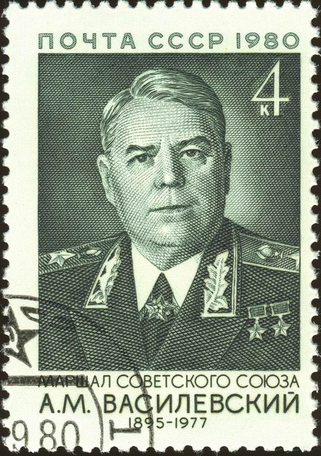

Aleksandr Mikhaylovich Vasilevsky was a Russian career officer in the Red Army who was promoted to the rank of Marshal of the Soviet Union in 1943.

He was the Chief of the General Staff of the Soviet Armed Forces and Deputy Minister of Defense during World War II, as well as Minister of Defense from 1949 to 1953. As the Chief of the General Staff, Vasilevsky was responsible for planning and coordinating almost all decisive Soviet offensives in World War II, from the Stalingrad counteroffensive to the assault on East Prussia and Königsberg.
At the start of the 1943 Soviet counteroffensive of World War II, Vasilevsky coordinated and executed the Red Army's offensive on the upper Don, in the Donbass, Crimea, Belarus and Baltic states, ending the war with the capture of Königsberg in April 1945. In July 1945, he was appointed Commander-in-Chief of Soviet forces in the Far East, executing the Manchurian Strategic Offensive Operation and subsequently accepting Japan's surrender. After the war, he became the Soviet Defense Minister, a position he held until Stalin's death in 1953. With Nikita Khrushchev's rise, Vasilevsky began losing power and was eventually pensioned off. After his death, he was buried in the Kremlin Wall Necropolis in recognition of his past service and contributions to his nation.